MDW ServiceMix Cookbook – Table
of Contents
Prerequisites:
Get ready
for MDW OSGi development.
ServiceMix OSGi Container (4.4.1
or 5.1.0)
Install locally
for custom development capabilities.
Project Setup:
Use the MDW
Plug-In wizard to build a workflow-faceted Java project.
2. Build Your Workflow Project
And package your
Java code for deployment into the container.
3. Deploy Your Workflow Bundle
Install MDW
and your workflow bundle in ServiceMix.
Workflow Development:
Build a basic
process definition.
2. Run Your Process through Designer
Execute your
process using test data.
Use the
Document Web Service adapter activity to invoke a SOAP web service.
4. Implement a Custom Activity
Create your
own Java-based activity implementor.
5. Expose Your Process to External Systems
Register an
MDW service-oriented Event Handler to launch your process.
Create a Dynamic
Java workflow asset and reference it as a process variable.
WebApp
Development:
1. Create a Web Page to Capture User Input
Use the
plug-in wizard to create an XHTML workflow asset.
2. Create a Standalone Custom Page
Build a
completely independent page which accesses a managed bean.
3. Create a Process Launch Page
Use a custom
page to capture input and kick off a workflow process.
4. Customize List Columns and Filters
Integrate
your business data in TaskManager.
5. Override Default TaskManager Resources
Make the
standard TaskManager look exactly the way you want.
6. Design a Report and Access it through the Web
Create a
BIRT report based on workflow data.
MDW ServiceMix Cookbook – Prerequisites
Set Up
Eclipse on Your PC:
- Make
sure you have Java Runtime 6 installed on your computer:
- Install
Eclipse Luna (4.4.x). The easiest
way to get Eclipse with all the necessary dependencies is to grab the
prepackaged version from this shared location:
§
\\eldnp1515dm4.ad.qintra.com\union_station\IT\MDW\eclipse
This Eclipse package includes all
the required dependencies except the MDW Plug-In itself. All the necessary features and plug-ins from
eclipse.org (Web Tools Platform, Data Tools Platform, Maven Support, Modeling
Framework, EPF Rich Text Feature, and Business
Intelligence and Reporting Tools) are
incorporated into this bundle.
- Launch
Eclipse. Here’s an example command
line that includes appropriate JVM memory settings for running and debugging:
C:\eclipse_4.4.1\eclipse.exe
-vm C:\jdk1.6.0_18\bin\javaw.exe -vmargs
-Dsun.lang.ClassLoader.allowArraySyntax=true -Xms512m -Xmx1024m
-XX:MaxPermSize=256m
- Install
the latest version of the MDW Plug-In via Eclipse Software Updates (Help
> Install New Software > Add > http://lxdenvmtc143.dev.qintra.com:6101/MdwPlugin >
Install).
Optional
Plug-Ins:
·
Groovy
Eclipse Plug-In (Groovy
script syntax highlighting, auto-complete, etc.)
http://dist.springsource.org/release/GRECLIPSE/e4.4
·
Quantum DB
Plug-In (Database querying)
http://quantum.sourceforge.net/update-site
MDW ServiceMix Cookbook – Prerequisites
Start with a vanilla installation
of your OSGi container.
Supported OSGi
Containers:
·
ServiceMix
4.4.1 (for MDW 5.2.x) or 5.1.0 (for MDW 5.5.x):
§ http://servicemix.apache.org/downloads.html
or
§ \\eldnp1515dm4.ad.qintra.com\union_station\IT\MDW\ServiceMix
·
Add the
following lines to INSTANCE_HOME/etc/system.properties:
runtimeEnv=dev
·
Add the MDW
and Archiva repositories to org.ops4j.pax.url.mvn.repositories in
INSTANCE_HOME/etc/org.ops4j.pax.url.mvn.cfg:
(Note: Add these repository URLs before any existing URLs, and be
careful to include the appropriate commas and line continuation backslashes)
http://archiva.corp.intranet/archiva/repository/mdw,
\
http://archiva.corp.intranet/archiva/repository/development,
\
http://archiva.corp.intranet/archiva/repository/snapshots@snapshots,
\
·
Start
ServiceMix. Later you'll learn how to
launch and debug ServiceMix from Eclipse, but for now just execute SERVICEMIX_HOME/bin/servicemix.bat
(root level) or INSTANCE_HOME/bin/karaf.bat (instance level).
·
MDW depends
on a number of OSGi bundles, some of which are custom versions hosted in the Archiva
Maven repository. These can be easily
installed via the mdw-dependencies feature through the following commands in
the ServiceMix karaf console:
·
For MDW
5.2.x:
addUrl
mvn:com.centurylink.mdw/mdw/5.2.xx/xml/dependencies
features:install
mdw-dependencies
·
For MDW
5.5.x:
addUrl mvn:com.centurylink.mdw/mdw/5.5.xx/xml/dependencies
features:install
mdw-smx-dependencies
·
MDW also
needs a JMS connection factory. The
steps for installing the JMS provider are different for ServiceMix 4.4 versus
ServiceMix 5.1:
·
ServiceMix
4.4.1:
i.
Start the
activemq-core and Aries transaction manager bundles by following these
one-times steps:
list | grep activemq-core
start 53
(replace 53 with the activemq-core bundle ID)
list | grep Aries
start 59
(replace 59 with the Aries bundle ID)
ii.
Deploy the
MDW ActiveMQ broker configuration by saving the following XML file into your
instance's deploy directory:
·
ServiceMix
5.1.0:
i.
Install the
ActiveMQ Blueprint feature by typing the following in the Karaf console:
addurl mvn:org.apache.activemq/activemq-karaf/5.10.0/xml/features
features:install activemq-blueprint
ii.
Download the
MDW ActiveMQ broker configuration by saving the following XML file into your
instance's etc directory:
·
Shutdown
your server by typing "shutdown" and then confirming in the karaf
command console.
§
MDW
ServiceMix Resources
On the MDW
SharePoint site, there are a number of example artifacts and an FAQ describing
common issues that can occur when deploying your workflow app on ServiceMix. Refer to these resources if you encounter
problems while working through this tutorial.
http://cshare.ad.qintra.com/sites/MDW/Developer%20Resources/Environment/ServiceMix
MDW Database:
·
MDW stores
workflow definition and runtime data in an Oracle database. Supported versions are Oracle 10g and
11g. For development you can point to
the shared MDW cloud environment. Otherwise
you will need to configure an instance of Oracle with the MDW db schema. Details are outlined in the following
SharePoint location:
§ http://cshare.ad.qintra.com/sites/MDW/Developer
Resources/MDW Database
MDW ServiceMix Cookbook – Project Setup
1. Create a Local MDW Workflow Project
Local projects in MDW allow you
to create custom Activity Implementors and External Event handlers, and to
override package-level configuration settings locally. Local projects require that a supported container be installed. The MDW Cloud Development Tutorial provides an in-depth comparison between
local and remote cloud projects.
You can start with a preexisting
Java project and convert it to an MDW workflow project. The following steps assume that you're
starting with a clean workspace. If
instead you already have a Java project that you wish to convert, you can
launch the conversion wizard by right-clicking on the project in Package
Explorer view and selecting Configure > Convert to MDW Workflow Project. Make sure to click the "Additional
configuration required..." link to execute the setup wizard (which will be
similar in appearance to the screenshots below). Note: converting an existing Java Project
does not automatically create artifacts such as the pom.xml Maven build
file. For this reason if you convert an
existing project it's recommended that you also generate a from-scratch example
project for reference.
Launch the Workflow
Project Wizard:
·
From the
Eclipse menu select File > New > Project... > MDW Projects > Local Workflow
Project. Type a project name and select the
Apache ServiceMix container, and then click Next.
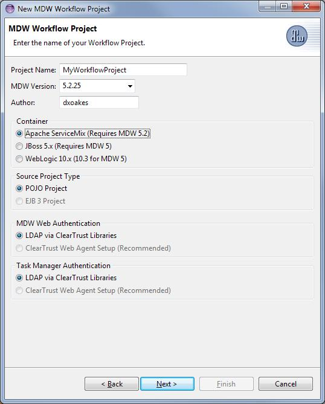
·
Populate the
container-specific Server Settings page.
If you're using a specific container instance other than the root, enter
the instance path for the Server Location.
The SSH port should match the value specified in etc/org.apache.karaf.shell.cfg. The default ServiceMix user/password for
root-level containers is smx/smx; for instance-level containers it's
karaf/karaf.
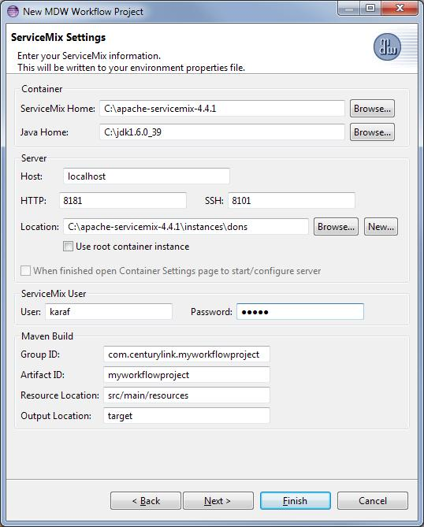
·
Enter the
connection information for your MDW database.
The default values correspond to the MDW Development Cloud Sandbox
environment.

·
When you
click Finish the wizard will create a Java project with the MDW Workflow
project facet. If you have the Maven M2E
plug-in installed (recommended), the project will also be configured for Maven
build integration.
·
One way to
deploy an OSGi bundle into ServiceMix is to manually copy it into the
"deploy" directory in your container instance. However, during iterative development it is
more convenient to integrate with the Eclipse build process so that your
changes can be published automatically.
For this we'll use the Eclipse Servers view (Window > Show View >
Other > Server > Servers).
·
Right-click
in Servers view and select New > Server.
Select Apache > ServiceMix 4.4 for the server type. The server name can be anything, but if you
ever use multiple servers in the same workspace it's handy to reference your
project name and/or instance name.
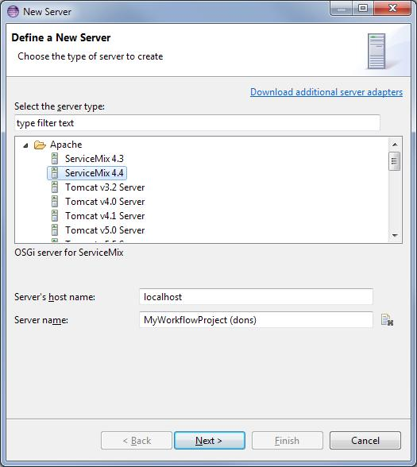
·
Click Next
and enter the location of your ServiceMix installation.
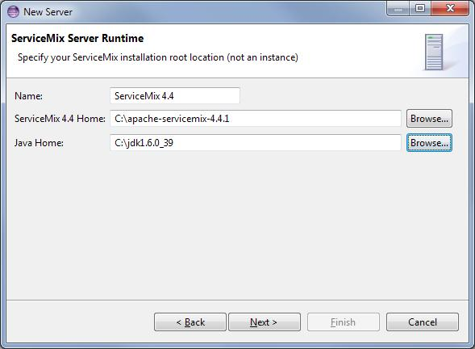
·
Click Next
again to configure your ServiceMix server instance.
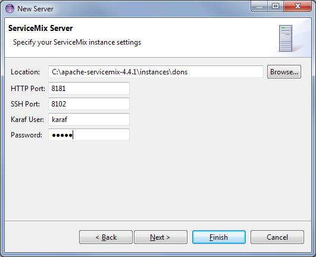
·
Click Next one
more time. Since you’ve not built your
project yet, do not select anything to be added to the Server yet in the Add
and Remove page. Click Finish.
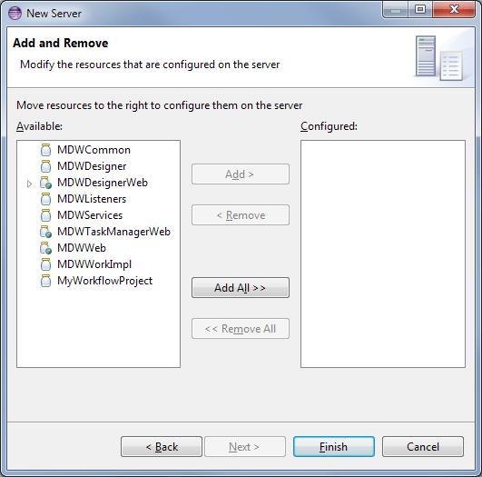
·
With this in
place you can start and stop ServiceMix from within Eclipse (output is to the
Server Console view). Start the server
by right-clicking and selecting Start from the menu.
MDW ServiceMix Cookbook – Project Setup
2. Build Your Workflow Project
At this point you have a plain,
empty ServiceMix instance up and running.
The console output is displayed in the MDW Server Console view.
Perform the
Maven Build for Your Project:
·
In Eclipse
Package Explorer view, right-click on the pom.xml file at the root of your project
and select Run As > Maven Build.
Since this is the first time the project's been built, you'll be
prompted to enter a goal in the launch configuration dialog. Enter "package" as your goal for
now.
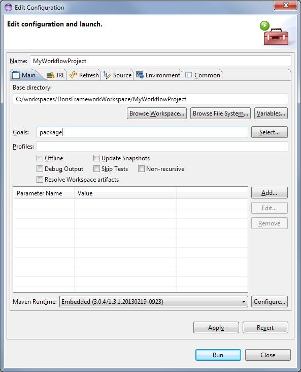
This produces your bundle jar
file in the target directory of your project.
You can inspect the generated jar file in this directory along with its
MANIFEST.MF to get a feel for how the OSGi bundle is packaged. The Maven build also merges the mdw property
file template (src/main/resources/deploy/config/com.centurylink.mdw.cfg) with
your environment-specific settings
(src/main/resources/deploy/env.properties.dev), and writes the output to the
etc directory of your ServiceMix instance.
This configuration file is required by the MDW Framework runtime engine.
If you have the Maven plug-in for
Eclipse installed, you can perform your builds directly through the Eclipse
mechanism (ctrl-B). A one-time step that
may be required to synchronize your Eclipse project build path with your
pom.xml dependencies is to right-click on the project in Package Explorer and
select Maven > Update Project Configuration.
MDW ServiceMix Cookbook – Project Setup
3. Deploy Your Workflow Bundle
It's apparent from your project's
pom.xml build file that your bundle has dependencies on the MDW Framework
bundles. So before you can deploy you'll
need to install the MDW feature (which includes all the required bundles).
Install the
MDW Feature:
·
Open a
ServiceMix shell window. This can be accomplished
by clicking on the  ("Client Shell") toolbar icon on the
Server Console view in Eclipse (the same view that displays the ServiceMix STDOUT
output). Note: if you did not choose to
start ServiceMix in Step 1, or if you've shut down the server in the meantime,
you can start it now by right-clicking on the project in Package Explorer and
selecting Run As > Start MDW Server Runner (or by right-clicking on the
project in Process Explorer and selecting Run).
("Client Shell") toolbar icon on the
Server Console view in Eclipse (the same view that displays the ServiceMix STDOUT
output). Note: if you did not choose to
start ServiceMix in Step 1, or if you've shut down the server in the meantime,
you can start it now by right-clicking on the project in Package Explorer and
selecting Run As > Start MDW Server Runner (or by right-clicking on the
project in Process Explorer and selecting Run).
·
In the
client shell window run these ServiceMix shell commands to install the MDW OSGi
Bundles. Replace 5.2.xx with your MDW
version. (Anytime you upgrade to a new
MDW build, you'll need to uninstall the previous feature and install the
updated one).
·
For MDW
5.2.x
Install the
MDW feature in karaf:
addUrl
mvn:com.centurylink.mdw/mdw/5.2.xx/xml/features
features:install
mdw
Test access in your browser:
http://localhost:8181/MDWTaskManagerWeb
·
For MDW
5.5.x
Install the
MDW feature in karaf:
addUrl
mvn:com.centurylink.mdw/mdw/5.5.xx/xml/features
features:install mdw
Test access
in your browser:
·
Shutdown ServiceMix
by clicking on the ("Stop") toolbar icon in the Server Console view (which will
automatically close your ServiceMix client shell window).
("Stop") toolbar icon in the Server Console view (which will
automatically close your ServiceMix client shell window).
Deploy Your
Workflow Bundle in ServiceMix:
·
Right-click
on your server in Servers view and select Add and Remove… from the menu. Add your workflow project to the configured
elements.
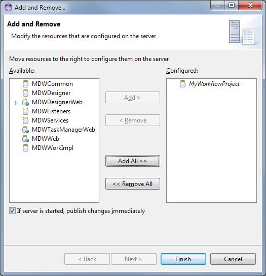
·
When you
make changes to your project’s source code, an Eclipse build will trigger an
automatic hot deployment to ServiceMix. Test
a code change by opening the WorkflowBundleActivator.java file that was
generated by the workflow project wizard.
Edit the logging output in the start() method so that it says something
different, then save (if Eclipse autobuild is in effect the save triggers a
build automatically; otherwise type ctrl-b to build). A Maven build is NOT required. Within a few seconds ServiceMix should pick
up your change and redeploy, and you'll see your modified logging output when
the bundle is activated.
·
Aside from
whatever custom logging you've added, you should see something like the
following in the Server Console view:
![Text Box: [(i)20120705.11:50:09.671 ~21] Starting workflow bundle com.centurylink.myservicemix
[(i)20120705.11:50:10.343 ~21] Registering com.centurylink.mdw.common.provider.ActivityProvider with unique alias 'myservicemixActivities' from bundle com.centurylink.myservicemix
[(i)20120705.11:50:10.343 ~21] Registering com.centurylink.mdw.common.provider.EventHandlerProvider with unique alias 'myservicemixEventHandlers' from bundle com.centurylink.myservicemix
[(i)20120705.11:50:10.343 ~21] Registering com.centurylink.mdw.common.provider.VariableTranslatorProvider with unique alias 'myservicemixVariableTranslators' from bundle com.centurylink.myservicemix
[(i)20120705.11:50:10.343 ~21] Startup complete for workflow bundle com.centurylink.myservicemix](MdwServiceMixCookbook_files/image023.gif)
Note: for
subsequent server startups, to prevent premature deployment of your workflow
bundle (before the MDW bundles have successfully deployed), it's a good idea to
set a bundle startup level in the ServiceMix Karaf console. The syntax is as follows:
bundle-level <my_bundle_id>
90
(This one-time step sets your bundle's
startup level to 90, greater than the range of startup levels specified in the
mdw feature install file).
MDW ServiceMix Cookbook – Workflow Development
Open the
Designer Perspective in Eclipse:
·
From the
Eclipse menu select Window > Open Perspective > Other > MDW Designer.
·
For detailed
documentation covering Designer functionality, refer to the User Guide:
§
http://cshare.ad.qintra.com/sites/MDW/User%20Documentation/MDW%20Designer%20User%20Guide.doc
Ensure
Permissions:
·
To follow
the steps in this section of the Tutorial you need to be granted the appropriate
roles in the MDW database you're pointed to.
You can view your current privileges by clicking on the Permissions
property tab for the project. An
administrator can grant you the appropriate access using the MDW Task Manager
webapp. For a detailed discussion of
this topic, refer to the "Roles and Permissions" section of the MDW Designer User Guide.
Create a
Workflow Package:
·
Expand the
project tree in Process Explorer. This
triggers Designer to load the high-level definition data contained in the
environment. The MDW development cloud sandbox
database contains quite a few process definitions and workflow artifacts so
this may take a minute or so to complete.
·
The
top-level branches in the project tree represent workflow packages. Your work should be incorporated in a
dedicated package, which will be used for managing resources. For further details refer to the Eclipse
Cheat Sheet (Help > Cheat Sheets > MDW Workflow > Importing, Exporting
and Versioning).
·
Create your
workflow package by right-clicking on your workflow project in Process Explorer
and selecting New > MDW Package.
Note: best practice is to ensure that your package name does not contain
spaces since it may incorporate dynamic Java or Groovy resources.
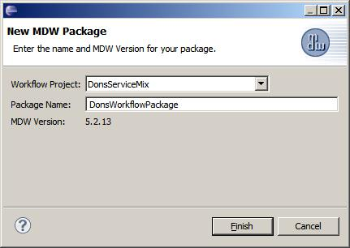
Create the
Process:
·
Right-click
on your new package in Process Explorer and select New > MDW Process. Enter the process name and description, and
click Finish.
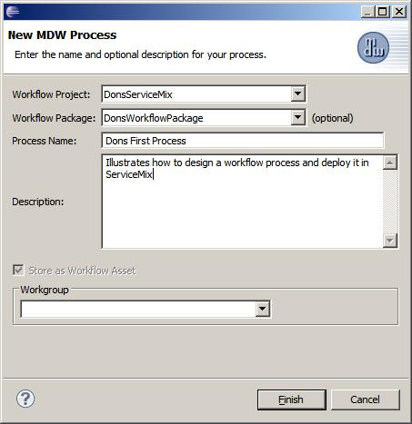
Add some
Variables:
·
In the
Properties View, select the Variables tab for the process and add an input
variable (orderDoc) and two local variables (orderNumber and validationResult)
with types as depicted below.
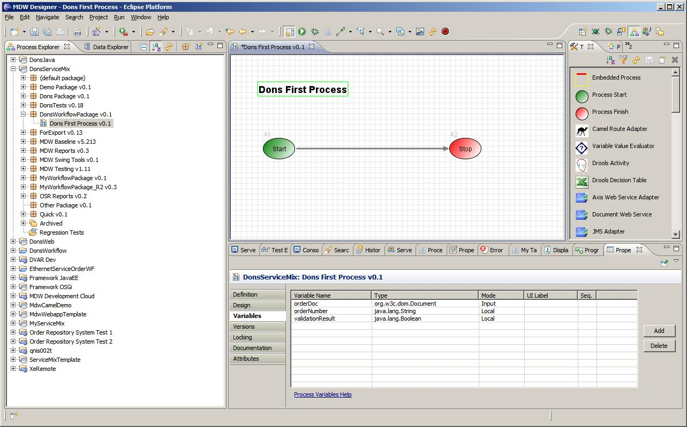
Add Custom
Logic with Groovy Script:
·
From the
Toolbox View, drag the activity whose icon is labeled "Execute Script"
onto your canvas and insert it into your process flow between the Start and
Stop activities. Change the label for
this new activity to say "Perform Validation".
Tip: To draw a link (or
"transition" in MDW terminology) between activities on the designer
canvas, hold down the Shift key on your keyboard, Click on the upstream
activity, and continue holding down the mouse left click button while Dragging
the cursor to the downstream activity ("shift-click-drag").
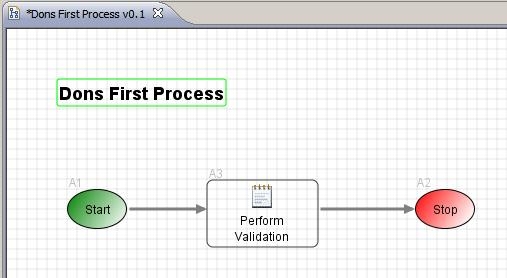
·
Right-click
on the activity and select Edit Script from the menu. The default scripting language for MDW is
Groovy (although you can change this in Script property tab for the activity). Update the Groovy script for your activity to
resemble the following:
When you
save the updated Groovy scrip you'll be presented with a message dialog
reminding you that your process definition should be saved to persist your
local changes back to the cloud. And
when you save the process definition your lock on the process may be
released. If this happens the canvas
will take on the appearance of a read-only process. Locking is the mechanism Designer uses to
prevent multiple simultaneous modifications.
If required you can re-lock the process from the Properties view Locking
tab.
Add Multiple
Activity Outcomes:
·
Add another
outbound transition from your "Perform Validation" activity. Assign Result Code values of
"true" and "false" to the respective outgoing transitions
as illustrated below. Save your process
definition. The return value from your
Groovy script drives which of these two transitions will be traversed at
runtime. Save your process design with
these changes.
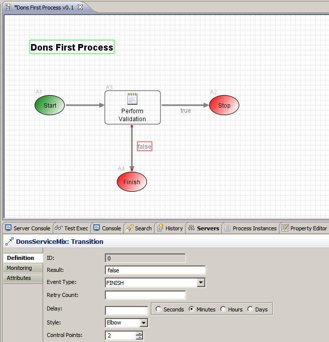
MDW ServiceMix Cookbook – Workflow Development
2. Run Your Process through Designer
Display the
Launch Configuration Dialog:
· Right-click on your process in Process Explorer view and Select Run. Designer will present the launch dialog and open a connection to ServiceMix to confirm that the server is running (required for launching a process).
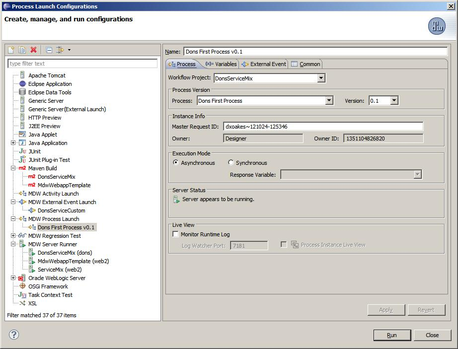
Populate the
Input Variable:
·
Select the
Variables tab in the launch dialog, and populate the orderDoc variable with the
following content.
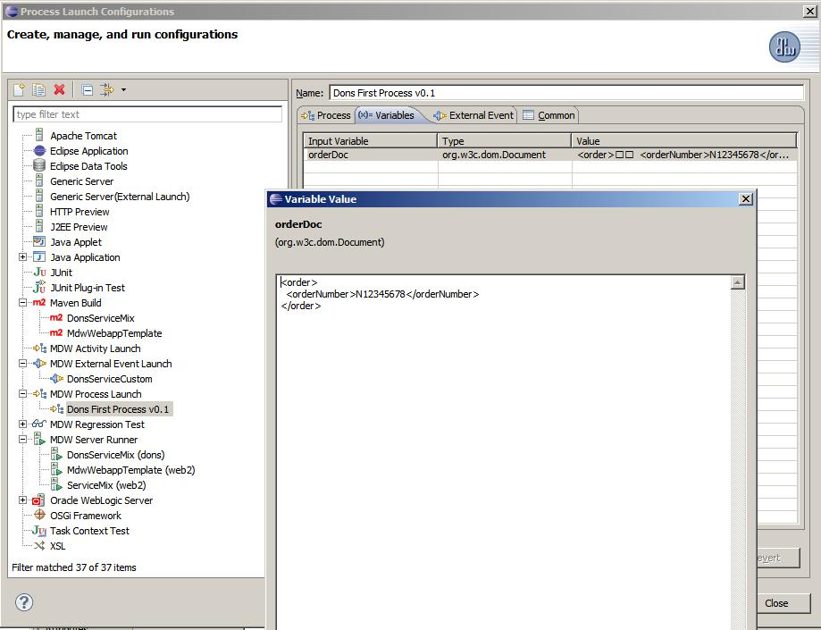
Launch and
View an Instance:
·
Click Run on
the launch dialog to run an instance of your process. You can open the process instance by
right-clicking on your process in Process Explorer view and selecting View
Instances. The latest instance will
appear at the top of the Process Instances view, and you can double-click on
the instance to open its runtime view. In
the process instance view you should see that the new instance traversed down
the happy path with a validation outcome equal to 'true'.
·
Click on the
Variables tab in the Properties view for the process instance to inspect the
runtime variable values.
Dynamically
Change Script Code and Rerun:
·
Change the Groovy
source so that validation expects an order number that begins with a digit:
·
Save your
process, and launch by right-clicking and selecting Run. Your previous value for orderDoc should be
remembered. Click the Run button on the
launch dialog. This time when your
process instance finishes executing, the validation result should reflect
'false'. Note that for your source code
changes to take effect you did not need to republish or redeploy; the changes
were automatically picked up and dynamically compiled by the runtime engine.
MDW ServiceMix Cookbook – Workflow Development
MDW comes with the Document Web
Service Activity for consuming document-style services hosted by external
providers. In this exercise we'll invoke
the GetEmployee service hosted in the MDW Development Cloud (and this service
itself is implemented as an MDW workflow process; the sections ahead describe
how to create and expose a service process).
Use the
Document Web Service Activity:
·
Open the
same process definition you started building in the sections above. Add another String variable called customerId,
and an Integer variable called discountPercent.
Edit the script in Perform Validation to assign the customerId variable according
to a node in the input document:
·
Drag the
Document Web Service activity onto the design canvas and insert it downstream
of Perform Validation. Label the web
service activity "Check Employee", and give it two separate outcomes
corresponding to true and false, just like the validation activity.
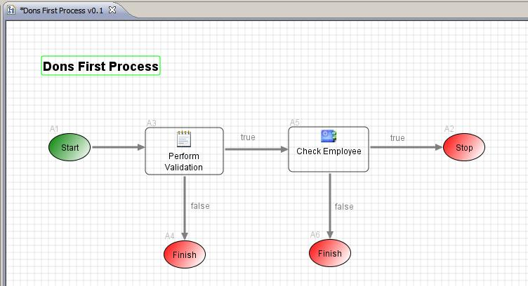
On the
Design tab of the service, set the Endpoint/WSDL URL to : http://lxdenvmtc143.dev.qintra.com:7021/MDWWeb/SOAP.
Add Pre and
Post Script:
·
In adapter
activities such as the Document Web Service activity, you can associate script
to be executed before and after the service call. Prescript can be used to build the service
request, and postscript can be used for processing the response. Double-click on the Check Employee activity
and select the Script property tab. Edit
the prescript to return a request that includes the customerId variable:
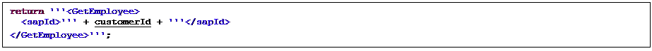
·
Add new
process variables to hold the service request (name=employeeServiceRequest,
type=com.centurylink.mdw.model.StringDocument) and response
(name=employeeServiceResponse, type=org.w3c.dom.Document). On the Design tab of the Check Employee web
service activity, select these new variables in the Request Variable and Response
Variable dropdowns respectively. Edit
the postscript so that it assigns a value to discountPercent based on the
response:
![Text Box: import org.w3c.dom.Node;
import org.w3c.dom.NodeList;
NodeList nodes = employeeServiceResponse.getFirstChild().getChildNodes();
String firstName = null;
String lastName = null;
for (int i = 0; i < nodes.getLength(); i++)
{
Node node = nodes.item(i);
if ("firstName".equals(node.getLocalName()))
firstName = node.getFirstChild().getNodeValue();
else if ("lastName".equals(node.getLocalName()))
lastName = node.getFirstChild().getNodeValue();
}
if (firstName != null && lastName != null)
{
println 'Found employee: ' + firstName + ' ' + lastName;
discountPercent = 10;
return true;
}
else
{
println 'Employee not found: ' + customerId;
discountPercent = 0;
return false;
}](MdwServiceMixCookbook_files/image045.gif)
Save and Run
Your Process:
·
Save the
modified process. When prompted, elect
to "Save as new minor version".
Whenever a process design that has runtime instances is changed
structurally (new activities or transitions), it is highly recommended that you
increment the version number so that Designer can correctly display runtime
data in the process instance view.
·
Right-click
on a blank spot in the designer canvas and select Run to open the launch
configuration dialog. On the Variables
tab change the value for orderDoc to include a valid orderNumber (with a digit
as the first character), and also your CenturyLink SAP ID for the customerId:
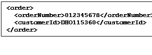
·
Right-click
again on a blank spot and select View Instances. Double-click the instance to open it. It should reflect that the service was
invoked, your SAP ID was found, and the discountPercent variable should be set
to 10. Double-click on the Check
Employee activity in the process instance.
On the Instance property tab, double-click on the instance row to
display the raw SOAP request and response:
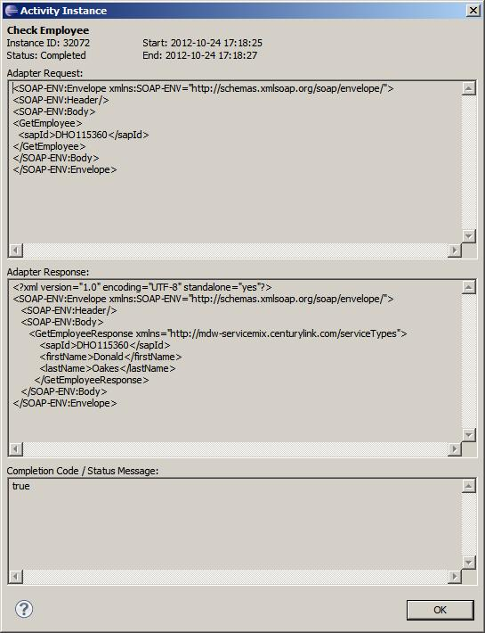
MDW ServiceMix Cookbook – Workflow Development
4. Implement a Custom Activity
Run the
Activity Creation Wizard:
·
Expand your
project in Process Explorer view. If you
don't already have a workflow package for your work, create one by selecting
File > New > MDW Package from the menu.
Right-click on your package and select New > Activity > General
Activity.
·
Note the
distinction between your workflow package and the Java package that appears in
the following screenshot. Your workflow
package contains your processes, assets and dynamic code. The Java package for your custom implementor
resolves to the location of the generated source code in your local Java
project on your hard drive.
·
When you
click Finish the wizard will generate a skeleton activity implementor and
register it in the database so that it will appear in the Toolbox for inclusion
in your processes.
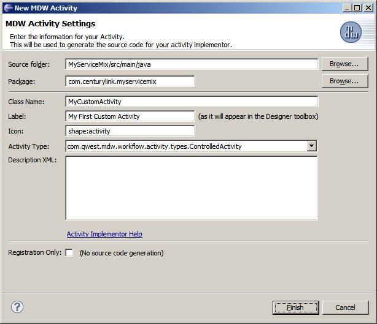
·
Edit the
generated Java code for your activity and save.

Add Your
Custom Activity to a Process:
Open
Designer Perspective and find your process definition from Step 2. From the Toolbox view drag your new custom
activity onto the Designer canvas and position it upstream of the existing
script activity. Change the activity
label from the default value and save the process.
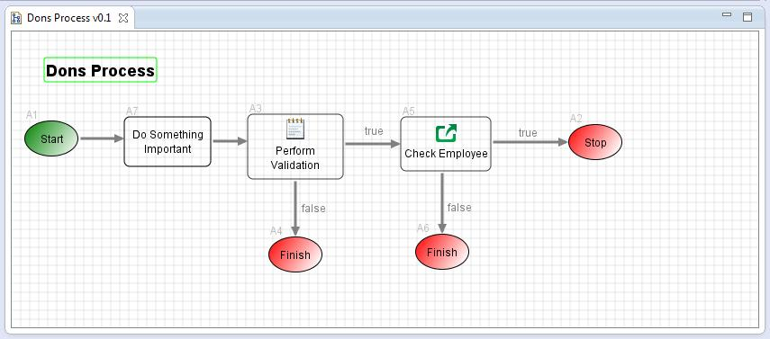
Run the
Modified Process:
·
Perform an
Eclipse build (either by autobuild or ctrl-b) and wait until the Server Console
displays the registration output for your bundle's ActivityProvider (which
indicates that your updated bundle has finished deploying).
·
Right-click
on the process and select Run to open the launch dialog. After the process instance is launched you
should see the custom activity log output in your Server Console view.
MDW ServiceMix Cookbook – Workflow Development
5. Expose Your Process to External Systems
Create an
MDW Service Process:
·
Right-click
on your workflow package in Process Explorer view and select New > MDW
Process. Name your process something
like "My Service Process" and click Finish. In the design canvas, right click on the
process title and select Show Properties.
Then on the Design property tab for your process check the box labeled
"Service Process". In MDW terminology
this designates your process as one that runs synchronously and is able to generate
a response in real time. For more
background on Service Processes, click on the context help link "Process
Configuration Help".
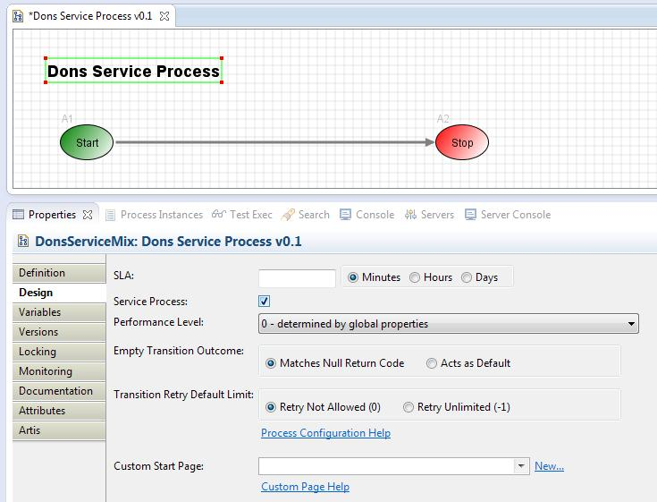
·
Add two
process variables of type org.w3c.dom.Document, an Input variable called
"request" and an Output variable called "response".
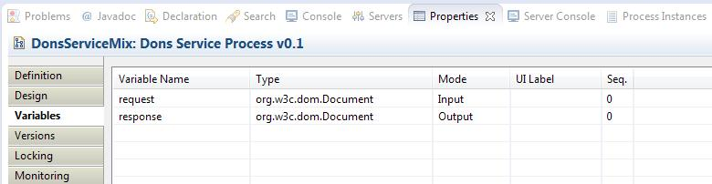
·
Drag a
Dynamic Java activity from the Toolbox view onto your canvas, label it
"Hello Response", and insert it into your flow between the Start and
Stop activities. On the Java property
tab for this activity, select "response" as writable. Click "Edit Java Code" and paste the
following to overwrite the body of the execute() method (you'll learn more
about Dynamic Java in the following section).
![Text Box: public Object execute(Map<String,Object> variables) throws JavaExecutionException
{
try
{
// use XPath to select elements
org.w3c.dom.Document request = (org.w3c.dom.Document)variables.get("request");
javax.xml.xpath.XPath xpath = javax.xml.xpath.XPathFactory.newInstance().newXPath();
// get the root node name
javax.xml.xpath.XPathExpression expr = xpath.compile("/");
org.w3c.dom.NodeList nodeList =
(org.w3c.dom.NodeList)expr.evaluate(request, javax.xml.xpath.XPathConstants.NODESET);
String rootName = nodeList.item(0).getChildNodes().item(0).getLocalName();
// get the 'name' value
expr = xpath.compile("//name");
nodeList = (org.w3c.dom.NodeList)expr.evaluate(request, javax.xml.xpath.XPathConstants.NODESET);
String name = nodeList.item(0).getChildNodes().item(0).getNodeValue();
String reply = "<" + rootName + "Response>\n " + "<reply>Hello, " + name + "!</reply>\n" +
"</" + rootName + "Response>";
variables.put("response", com.centurylink.mdw.xml.DomHelper.toDomDocument(reply));
return null;
}
catch (Throwable t)
{
throw new JavaExecutionException(t.getMessage(), t);
}
}](MdwServiceMixCookbook_files/image058.gif)
·
The
"request" variable is implicitly bound to the contents of the
incoming service request. The
"response" variable that this code populates is the basis for what
will be returned to external systems that invoke your workflow process through
a service call.
·
Before
exposing your process as a service, you can test it in Designer using a process
launch configuration (right-click and select Run…). Populate the "request" input
variable with a value like the following (substitute your name in both the root
element name and the child node value).
·
On the
launch configuration Process tab, select the Synchronous radio button. In the Response Variable dropdown select
"response", so that the Designer plug-in will display your generated
response in the console.
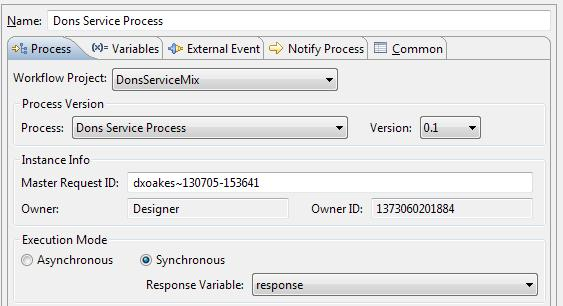
·
The response
displayed in the Process Launch Response console should look something like
this:
·
If you
encounter a NoClassDefFoundError for a class in package javax.xml.xpath, then you'll need to add this to the Import-Package
declaration in your pom.xml build file.
Once you've successfully launched your service process, view the latest
instance to confirm the values for the request and response variables.
Create an
External Event Handler:
·
MDW services
are registered using a protocol-neutral mechanism based on the request document
content. This registration is what we
refer to as an External Event Handler (later you'll learn how to use an
alternate registration method based on Apache Camel routes). Once you register an event handler, then by
default it's exposed over all the available transport channels that MDW supports
(SOAP, REST, JMS, etc). For more
information about this mechanism, refer to Help Topic: MDW Designer Help >
Coding and Development > Listeners and External Event Handlers.
·
Right-click
on your workflow package in Process Explorer view and select New > External
Event Handler. For the Handler Action
type the name of the service process you created in the previous step. For the Message Pattern enter an XPath
expression that matches your request document.
In effect, you are telling MDW to launch your service process whenever
it receives a request whose document content matches the configured message
pattern. Note that if a request is
received that matches multiple registered event handlers, then it is undefined
which of those handlers will be invoked.
For this reason it is imperative that you make the XPath expression
unique so that it does not match requests it is not intended to handle (and
therefore hijack those requests from their intended handler).
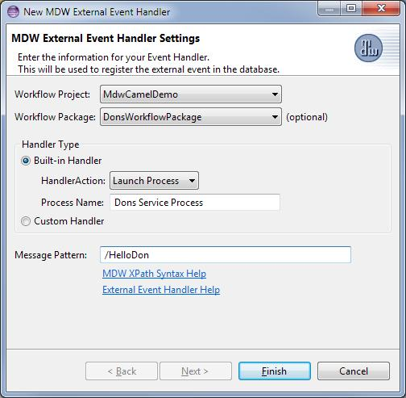
·
In Process
Explorer view your event handler appears labeled as its associated message
pattern. You can test it by
right-clicking on it and selecting Run, and then filling in the External Event
Request in the launch dialog. When you
run this way Designer submits the request document over HTTP to the MDW RESTful
listener, so it not only tests your process flow but it also tests your Event
Handler registration as well.
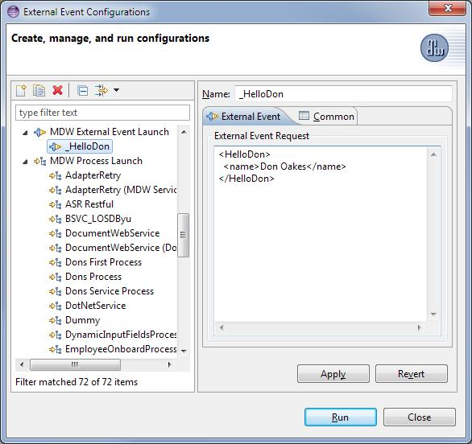
·
After
successfully invoking your External Event Handler, you should see the expected
response in the console view, and you should also find that a new instance of
your service process was created.
Implement a
SOAP Web Service:
·
The easiest
way to expose your process as a SOAP service is to create a document-style WSDL
workflow asset that describes it. In
Process Explorer view, right-click on your workflow package and select New >
XML Document. Name it something
appropriate for your service, and select the language as WSDL.
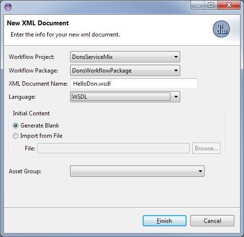
·
Edit the
content of your WSDL to look something like the following (with appropriate
substitutions based on your request and response).
![Text Box: <?xml version="1.0" encoding="UTF-8"?>
<wsdl:definitions
name="wsdl-first"
xmlns:wsdl="http://schemas.xmlsoap.org/wsdl/"
xmlns:soap="http://schemas.xmlsoap.org/wsdl/soap/"
xmlns:xsd="http://www.w3.org/2001/XMLSchema"
xmlns:xsi="http://www.w3.org/2001/XMLSchema-instance"
xmlns:tns="http://mdw-servicemix.centurylink.com"
targetNamespace="http://mdw-servicemix.centurylink.com">
<wsdl:types>
<xsd:schema>
<xsd:element name="HelloDon">
<xsd:complexType>
<xsd:sequence>
<xsd:element
name="name"
type="xsd:string" />
</xsd:sequence>
</xsd:complexType>
</xsd:element>
<xsd:element name="HelloDonResponse">
<xsd:complexType>
<xsd:sequence>
<xsd:element
name="reply"
type="xsd:string" />
</xsd:sequence>
</xsd:complexType>
</xsd:element>
</xsd:schema>
</wsdl:types>
<wsdl:message name="HelloDonRequest">
<wsdl:part
name="payload"
element="HelloDon" />
</wsdl:message>
<wsdl:message name="HelloDonResponse">
<wsdl:part
name="payload"
element="HelloDonResponse" />
</wsdl:message>
<wsdl:portType name="Hello">
<wsdl:operation name="Hello">
<wsdl:input message="tns:HelloDonRequest" />
<wsdl:output message="tns:HelloDonResponse" />
</wsdl:operation>
</wsdl:portType>
<wsdl:binding
name="HelloSOAPBinding"
type="tns:Hello">
<soap:binding
style="document"
transport="http://schemas.xmlsoap.org/soap/http" />
<wsdl:operation name="Hello">
<wsdl:input>
<soap:body use="literal" />
</wsdl:input>
<wsdl:output>
<soap:body use="literal" />
</wsdl:output>
</wsdl:operation>
</wsdl:binding>
<wsdl:service name="HelloService">
<wsdl:port
binding="tns:HelloSOAPBinding"
name="soap">
<soap:address location="${MDWFramework.MDWDesigner/services.url}/SOAP/DonsWorkflowPackage/HelloDon.wsdl" />
</wsdl:port>
</wsdl:service>
</wsdl:definitions>](MdwServiceMixCookbook_files/image069.gif)
·
Note that
this URL is parameterized in the WSDL <soap:address> so that at runtime
it will be substituted with the appropriate base URL for the specific
environment where it's served from
·
Once you
save the WSDL you should be able to access it in your browser from a location similar
to:
http://localhost:8181/MDWWeb/SOAP/DonsWorkflowPackage/HelloDon.wsdl
Invoke Your
Service:
·
The MDW
WebTools includes a utility that you can use to test your service. Access the WebTools in your browser through a
URL like this:
Click on the HTTP Poster
navigation link (if you don't see this link you'll need to be granted Site
Admin permissions for the environment where you're testing). The submittal URL for HTTP Poster defaults to
the MDW REST endpoint, so change the context root from REST to SOAP as
illustrated in the screenshot below.
Populate the Message Body with something like the following:
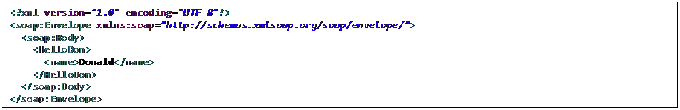
Click on the Send Message button,
and your service process should be executed and you should see a SOAP response
like in this screenshot:
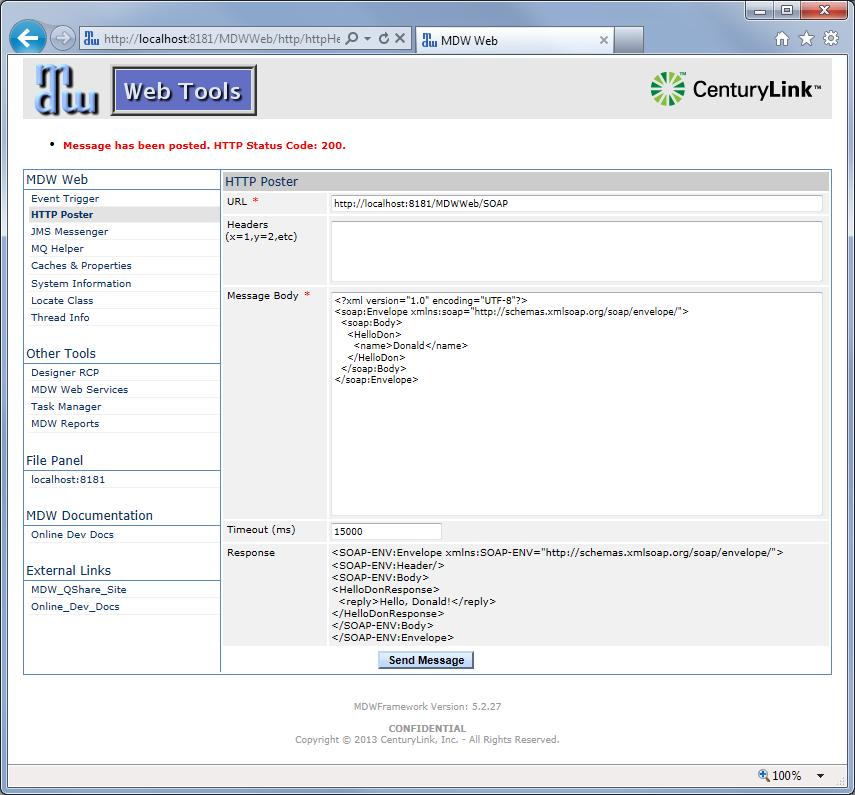
If you have trouble getting Site
Admin access, or you prefer to use another tool like SoapUI or SOAtest, you can
accomplish the same thing by just making sure the endpoint URL is like that in
the screenshot and that your request content inside the SOAP body matches your
registered External Event Handler.
Register
Your Service through a Camel Route:
·
Apache Camel is an "integration framework" that
enables you to link together services through declarative route definitions. As an alternative to the traditional MDW
External Event Handler registration described above, you may choose to expose
your service through a Camel route. The
advantages of this include the advanced transport and filtering
capabilities that Camel supports. For
example, Camel goes beyond the basic XPath message filtering provided by MDW
event handlers to enable filtering according to request header values or even
by complex scripting language expressions.
·
Among other
ways, a Camel route can be defined using a Spring configuration file. When you ran the MDW Eclipse wizard to create
your workflow project back in Project Setup, a Spring config file named
bundle-context.xml was generated for you under
src/main/resources/META-INF/spring. This
file gets embedded into the META-INF directory of your workflow bundle. You could declare your MDW Camel route in
bundle-context.xml, but then you'd be missing out on one of the major benefits
of using MDW: dynamicism. Instead, we'll
create a separate child Spring configuration as a workflow asset that can be
changed without requiring that your bundle be redeployed. In fact, Spring configuration assets in MDW can
be used to inject any Spring-enabled entity into your OSGi bundle context.
·
Right-click on
your workflow package in Process Explorer view, and select New > Camel
Route. Name your route and make sure and
select " Standalone Route" for the Language.
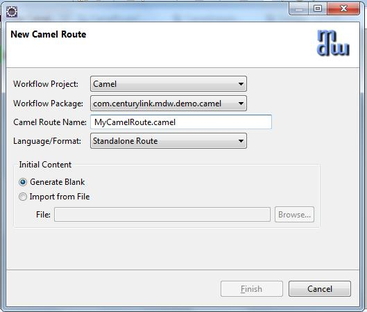
Then update the generated content
with something like the following and save:
![Text Box: <?xml version="1.0" encoding="UTF-8"?>
<beans xmlns="http://www.springframework.org/schema/beans"
xmlns:xsi="http://www.w3.org/2001/XMLSchema-instance"
xmlns:osgi="http://www.springframework.org/schema/osgi"
xmlns:ctx="http://www.springframework.org/schema/context"
xmlns:camel="http://camel.apache.org/schema/spring"
xsi:schemaLocation="http://www.springframework.org/schema/beans http://www.springframework.org/schema/beans/spring-beans-2.5.xsd
http://www.springframework.org/schema/osgi http://www.springframework.org/schema/osgi/spring-osgi-1.0.xsd
http://www.springframework.org/schema/context http://www.springframework.org/schema/context/spring-context.xsd
http://camel.apache.org/schema/spring http://camel.apache.org/schema/spring/camel-spring.xsd">
<camel:camelContext xmlns="http://camel.apache.org/schema/spring" xmlns:foo="http://centurylink.com/foo">
<!-- MDW REST Web Service to Launch a Process -->
<route>
<from uri="mdw:REST/HelloDon"/>
<to uri="mdw:process?name=Dons Service Process" pattern="InOut" />
</route>
</camel:camelContext>
<!-- MDW camel component -->
<bean id="mdw" class="com.centurylink.mdw.camel.MdwComponent" />
</beans>](MdwServiceMixCookbook_files/image075.gif)
The sole route declared within this
camelContext tells the MDW Camel component to register a REST-based web service
and launch Dons Service Process when invoked.
In order for the "mdw:" URI pattern to be supported, the MDW
component bean is declared. Notice that
with the "from" URI in an MDW Camel route you have the option of
specifying a specific endpoint URL path (REST/HelloDon), in contrast to the
standard MDW External Event handler which all use the same endpoint.
· In order for the framework to identify the correct parent Spring app context to associate with your asset, you'll need to set a configuration parameter to tie your workflow package to your OSGi bundle. Right-click on your workflow package in Process Explorer and select Show Properties. Select the Configuration property tab and under Environments click the Add button and enter the name "dev". Add a property named OsgiBundleSymbolicName and under dev assign the value from the <bundle.symbolicName> element in your project's pom.xml build file.
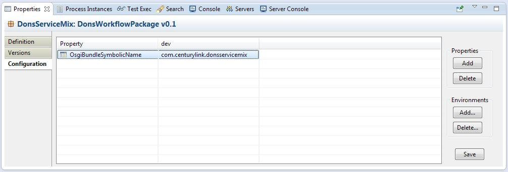
Click the Save button to persist this package
configuration setting for your dev environment.
Invoke Your Service through REST:
·
In order to
make use of MDW Camel support, you'll need to add the following dependency to
your pom.xml build file:

Also, since all the wiring magic is
done by reflection, you'll need to explicitly add the following import under
the <Import-Package> section:
Then perform a Maven build to pick up
this new dependency.
·
Also, since mdw-camel
is an optional feature, you'll need to install it by typing the following
command at the karaf command prompt:
features:install mdw-camel
·
As before
with your SOAP request, you can use the MDW WebTools HTTP Poster facility to
submit your REST request to the server.
The URL should include the path you assigned in the "from" URI
in your Camel route Spring asset.
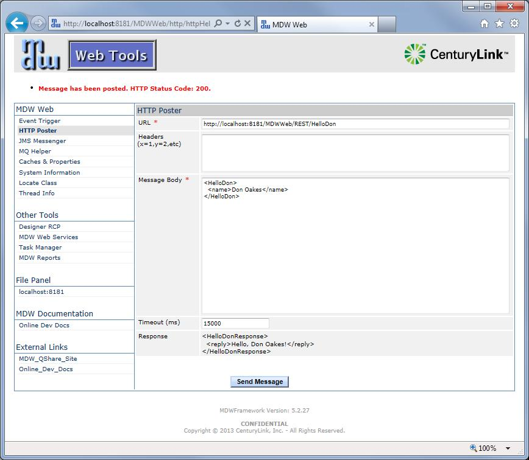
MDW ServiceMix Cookbook – Workflow Development
Dynamic Java gives you the
ability to incorporate custom Java logic in your workflow without having to redeploy
your OSGi bundle every time this logic changes.
This gives you the flexibility to rapidly respond to changing business requirements. Dynamic Java artifacts are examples of MDW
Workflow Assets, which are resources that can be changed on the fly as part of
an agile development procedure.
Naturally this power is meant to be used in a responsible and accountable
manner. To this end all workflow assets
provide a common set of features, including:
·
LDAP-based authorization
control
·
Versioning
with comments, history, archiving and rollback
·
Asset
locking to prevent simultaneous modification
·
Rigorous
audit logging to track user changes
·
Import and
export procedures for migrating between environments
·
Custom
attributes allow user-configurable options such as
In the steps below you'll use
Dynamic Java to perform the logic in an activity and to populate a process
variable based on a custom object type.
Create Java
Source Asset:
·
Expand your
project in Process Explorer view, right-click on your workflow package and
select New > Java Source. Name the
Java Source class something like "DonsOrder", and Click Finish to
create a skeletal implementation.
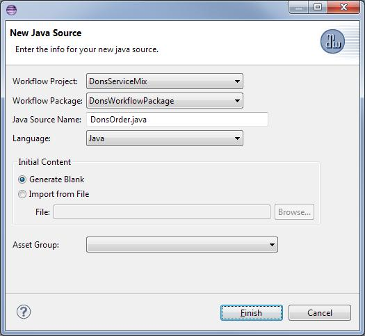
·
Populate the
class definition with the following to require that order numbers begin with a
numeric digit, and save (electing to keep the asset locked and not to increment
the version).
![Text Box: package DonsWorkflowPackage;
import org.w3c.dom.Document;
import org.w3c.dom.Node;
public class DonsOrder implements java.io.Serializable
{
private String orderNumber;
public String getOrderNumber()
{
return orderNumber;
}
private String customerId;
public String getCustomerId()
{
return customerId;
}
private boolean valid;
public boolean isValid()
{
return valid;
}
private String error;
public String getError()
{
return error;
}
public DonsOrder(Document orderDoc)
{
Node orderNumNode = orderDoc.getFirstChild().getFirstChild().getNextSibling();
this.orderNumber = orderNumNode.getFirstChild().getNodeValue();
this.customerId = orderNumNode.getNextSibling().getNextSibling().getFirstChild().getNodeValue();
}
public boolean validate()
{
if (!Character.isDigit(orderNumber.charAt(0)))
{
valid = false;
error = "Order numbers must begin with a numeric digit";
}
else
{
valid = true;
error = null;
}
return valid;
}
public String toString()
{
return "orderNumber=" + orderNumber + " customerId=" + customerId;
}
public boolean equals(Object o)
{
if (!(o instanceof DonsOrder))
return false;
DonsOrder order = (DonsOrder)o;
return orderNumber.equals(order.orderNumber) && customerId.equals(order.customerId);
}
}](MdwServiceMixCookbook_files/image084.gif)
Use a
Dynamic Java Activity:
·
Open the non-service
process definition you created back in steps 1 through 3. Add a local process variable of type
"java.lang.Object" and call it "order". Delete the orderNumber, customerId and
validationResult variables since the order state is now encapsulated in your
Dynamic Java object.
·
Drag a
Dynamic Java Activity from the toolbox and insert it at the beginning of your
flow (immediately downstream of the Start activity). Name it "Parse Order Request". On the Java property tab for this activity,
make the order object variable writable.
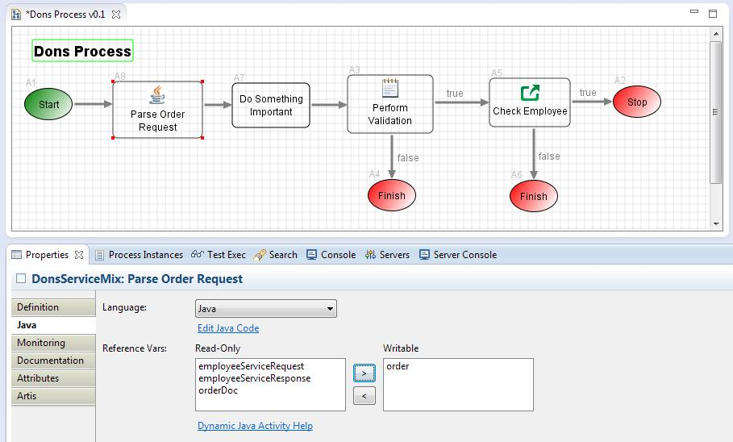
·
On the same
tab click the "Edit Java Code" hyperlink, and override the execute() method as follows:
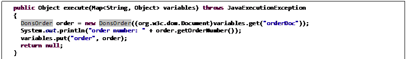
The return value from this method
drives the subsequent process flow, just as with the script activity. A null return value indicates that the
process should traverse the default (no-label) outbound transition.
·
Update the
"Perform Validation" script activity with the following simplified
code which takes advantage of the behavior of your Dynamic Java object.
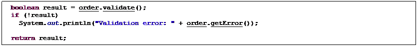
Save and
Execute your Process:
·
Save your
process with an incremented version, and run it with something like the
following order input document so that validation will fail.
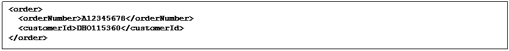
·
Right-click
somewhere in the design canvas and select View Instances. View the most recent process instance to
confirm that it followed the expected path.
Click on the Variables property tab and double-click the order variable
to see its value. Note: the value
displayed is governed by your toString() implementation. In Dynamic Java objects you should always
implement toString() and equals() methods.
MDW ServiceMix Cookbook – WebApp Development
MDW comes with a fully functional
TaskManager webapp geared for end-user interaction with workflow processes
through Manual Task activities. Usage is
described in the TaskManager User Guide. This
out-of-the-box (or standard) TaskManager is specifically designed to be
extended, and allows for multiple degrees of customization. At a basic level, you can customize the display
for a particular task as discussed in Step 1 below. However, you can
also expose a completely customized TaskManager by overriding default resources
as in Step 5. Any
TaskManager page, template, image, stylesheet, managed bean, action controller,
etc. can be overridden with a custom version.
This enables you to leverage any prebuilt Task Manager functionality
while delivering a completely customized webapp to suit your specific needs.
1. Create a Web Page to Capture User Input
Add a Manual
Task to the Process:
·
Start with
the workflow process you built in the preceding Workflow Development section of
this guide. Drag a Custom Manual Task
activity onto the design canvas and insert it into the 'false' outcome path
from the validation Script activity.
Label the manual task activity something like "Dons Manual Acknowledge". In the Properties view for the activity,
select the Design tab and set the task name to something like "Dons
Acknowledgement". Set Task Due In to
8 hours. Click the Workgroups tab and
select at least one workgroup to which you belong.
·
Add two more
local variables to the process: ackDate (with type=java.util.Date) and
ackComment (with type=java.lang.String).
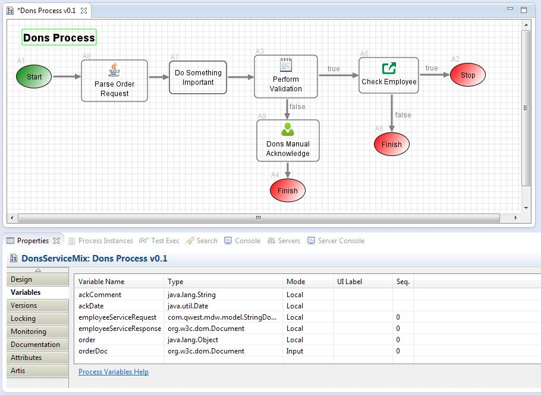
·
When you
save your process you'll be prompted to increment the version. Since this process already has instances, and
in the meantime you've changed it structurally (by adding activities and
transitions), it's highly recommended that you increment the version number
when saving.
Create a
Custom Web Page:
·
A custom web
page is an example of a Workflow Asset. The MDW
plug-in provides a wizard-based interface for creating different types of
workflow assets. To create a JSF
Facelet-format custom page, right-click on your package in Process Explorer and
select New > Page. Enter a page name like
donsOrderAck.xhtml (by convention, it's nice to use .xhtml in your page name,
but it's not strictly necessary since the engine recognizes the page type by
the selected Language). Select
customTaskContent as the page template, and click Finish.
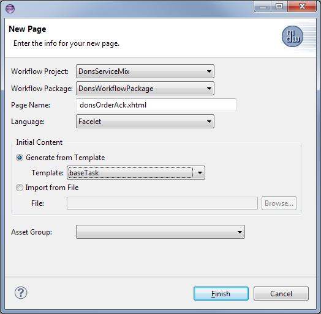
·
Paste the
following contents into your new Facelet page and then save. This page illustrates usage of the implicit
"process" managed bean. This
represents the workflow process associated with the manual task, and provides
two-way access to the process variable values.
Another implicit bean that's useful in the context of a manual task is
named "task". This is an
instance of the framework class FullTaskInstance, and provides access to
standard task-related values such as Due Date.
![Text Box: <?xml version="1.0" encoding="ISO-8859-1" ?>
<!DOCTYPE html PUBLIC "-//W3C//DTD XHTML 1.0 Transitional//EN" "http://www.w3.org/TR/xhtml1/DTD/xhtml1-transitional.dtd">
<html
xmlns="http://www.w3.org/1999/xhtml"
xmlns:ui="http://java.sun.com/jsf/facelets"
xmlns:f="http://java.sun.com/jsf/core"
xmlns:h="http://java.sun.com/jsf/html"
xmlns:mdw="http://www.centurylink.com/mdw/jsf"
xmlns:rich="http://richfaces.org/rich"
xmlns:a4j="http://richfaces.org/a4j">
<ui:composition template="/facelets/layout/baseTask.xhtml">
<ui:define name="taskData">
<rich:panel header="Order Acknowledgement" styleClass="mdw_defaultPanel" style="width:800px;">
<h:panelGrid columns="2" width="100%" cellpadding="6" cellspacing="2" columnClasses="mdw_label,mdw_value">
<h:outputLabel for="orderNum" value="Order Number:"/>
<h:outputText id="orderNum" value="#{process.variables.order.orderNumber}" style="font-weight:bold" />
<h:outputLabel for="ackDate" value="Date:" />
<rich:calendar id="ackDate" value="#{process.variables.ackDate}" inputClass="mdw_value" inputStyle="margin-top:-2px;" buttonClass="mdw_calendarBtn" />
<h:outputLabel for="ackComments" value="Details:" />
<h:inputTextarea id="ackComments" wrap="off" value="#{process.variables.ackComment}" rows="6" styleClass="mdw_textAreaInput" style="width:680px;" />
</h:panelGrid>
</rich:panel>
</ui:define>
</ui:composition>
</html>](MdwServiceMixCookbook_files/image094.gif)
·
Save the
XHTML page, return to your process design, select the manual task, and display
the Design tab in its Properties view.
In the Custom Page dropdown select the page you just created. Save the process.
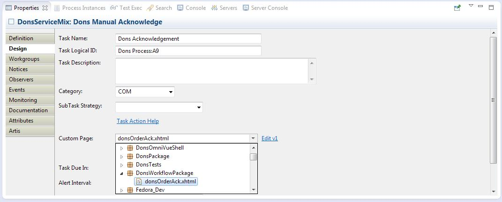
Launch the
Process to View your Custom Page:
·
Run the
process so that it flows to the new manual task activity. View the latest instance and you'll see that
execution has halted awaiting user input through your custom page.
·
Access
TaskManager by right-clicking on the top-level workflow project in Process
Explorer view and selecting Web > Task Manager.
·
If you've
not already done so, click the Admin tab to add yourself to a workgroup
associated with the manual task in your process (user-group relationships are
cached in the browser session, so you'll need to close your browser and
relaunch to pick up any changes).
·
Click on the
Workgroup Tasks tab in Task Manager.
Locate the newly-created instance, click its checkbox, select Claim in
the Action menu.
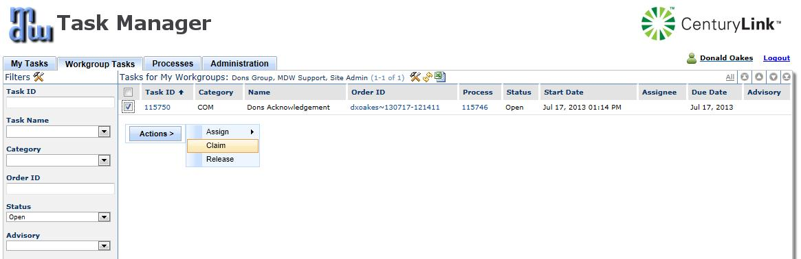
·
You'll be navigated
to the My Tasks tab where you should see the instance you just claimed. Click on the Task ID link for the row to view
the custom page. Enter values in the
Order Acknowledgement section, and select Complete in the Task Action menu.
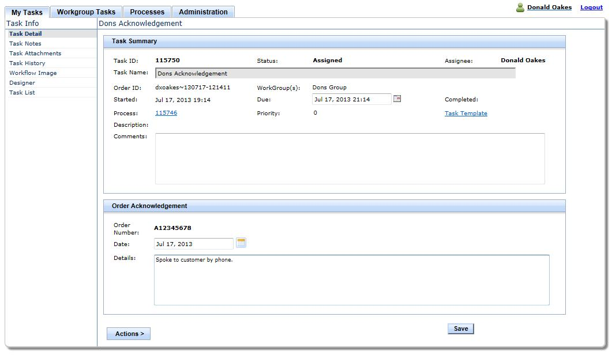
·
Return to Designer
Perspective in Eclipse, right click in the process instance and select
"Refresh". Flow should have
progressed beyond the manual task activity.
View the variables tab to confirm that the values you entered for
ackDate and ackComments are reflected.
MDW ServiceMix Cookbook – WebApp Development
2. Create a Standalone Custom
Page
Your requirements may call for
webapp functionality that has nothing to do with standard TaskManager. You can create custom pages that don't depend
on MDW at all. You have the ability to
access workflow process data if desired, and to leverage the stylesheets and
templates provided by TaskManager. But
you can also start completely from scratch if you'd like, or you can
mix-and-match to leverage MDW but with a web user interface that you develop
from the ground up.
Create a
Managed Bean Dynamic Java Object:
·
The secret
to including custom logic in your webapp is Dynamic Java. Within your custom pages you can use the
standard Java expression language syntax to access and update any data that
needs to be displayed by leveraging the JSF Managed Bean annotations. Right-click on your workflow package in
Process Explorer and select New > Java Source. Name your Dynamic Java source asset something
like "DonsHelper.java" and click Finish. Add the following JSF annotations to the
generated class:
This
declares your class to be a JSF managed bean in session scope with a logical
name of "donsHelper". You'll
probably notice right away that these annotations are not recognized by the
Java compiler in Eclipse. They are
provided by the Java ServerFaces API, which until now has not been a part of
your project. Add the following
dependency in your pom.xml build file:
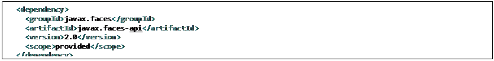
Once you've
saved your pom.xml, Eclipse should be able to discover the necessary imports if
you open your Dynamic Java class and type Ctrl-Shift-O (or Source > Organize
Imports).
·
Now add the
following declarations and methods inside your Dynamic Java class and save:

MDW scans for managed beans on TaskManager
startup, so to pick up and compile your Dynamic Java, you'll need to restart
the mdw-taskmgr bundle from karaf:
list | grep mdw
restart
<taskmgr_bundleid>
Create a
Custom Page that Uses Your Managed Bean:
·
Right-click
on your workflow package in Process Explorer and select New > Page. Name it something like donsPage.xhtml, select
"blank" as the template, and click Finish. Paste in some content like the following
(substituting the logical name of your helper bean in the expressions):
![Text Box: <?xml version="1.0" encoding="ISO-8859-1" ?>
<!DOCTYPE html PUBLIC "-//W3C//DTD XHTML 1.0 Transitional//EN" "http://www.w3.org/TR/xhtml1/DTD/xhtml1-transitional.dtd">
<html
xmlns="http://www.w3.org/1999/xhtml"
xmlns:ui="http://java.sun.com/jsf/facelets"
xmlns:f="http://java.sun.com/jsf/core"
xmlns:h="http://java.sun.com/jsf/html"
xmlns:a4j="http://richfaces.org/a4j"
xmlns:rich="http://richfaces.org/rich"
xmlns:mdw="http://www.centurylink.com/mdw/jsf">
<ui:composition>
<rich:panel header="Very Important">
<h:form>
<h:outputLabel for="somethingInput" value="Something:"/>
<h:inputText id="somethingInput" value="#{donsHelper.something}" /> <br/>
<h:commandButton value="Do Something" action="#{donsHelper.doSomething}" style="margin:5px" />
</h:form>
</rich:panel>
<h:messages style="color:red;font-weight:bold;" />
</ui:composition>
</html>](MdwServiceMixCookbook_files/image104.gif)
·
Save your
page and access it in your browser by right-clicking on it in Process Explorer
and selecting Run. Note: when you save a workflow asset in Designer, this triggers a
server cache refresh. Due to the
proliferation of workflow assets in the MDW sandbox environment, this can take
some time (during which you'll see output in your Server Console view). Any changes you make to your page are
dynamically applied, but they may not be reflected in your browser until the server
cache refresh has completed.
·
Enter a
value for the text input in your form and click the button. You should see a message indicating that your
action was performed on the server.
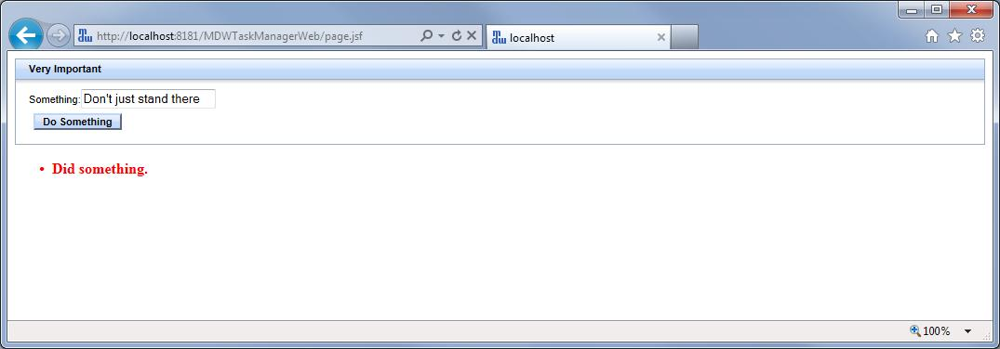
In your
Server Console view you should also be able to see output showing the captured
value for the user-entered data.
Use Custom
Layout Templates and Web Resources:
·
TODO.
Add a Custom
Navigation Outcome:
·
TODO.
MDW ServiceMix Cookbook – WebApp Development
3. Create a Process Launch Page
View the
Auto-Generated Process Launch Page:
·
TODO.
Create a
Custom Page for Launching a Process
·
TODO.
MDW ServiceMix Cookbook – WebApp Development
4. Customize List Columns and
Filters
TODO
MDW ServiceMix Cookbook – WebApp Development
5. Override Default TaskManager
Resources
TODO
MDW ServiceMix Cookbook – WebApp Development
6. Design a Report and Access it through the Web
MDW uses the BIRT
open-source reporting framework. BIRT includes a report-designer plug-in for
Eclipse, as well as an embeddable runtime that enables reports to be displayed in
an MDW webapp.
Create a
BIRT Report Based on the Tasks Data Template:
·
To create a
new BIRT Report, right-click on your package and select New > Report. Name the report, select the Tasks data
template, and then click finish.
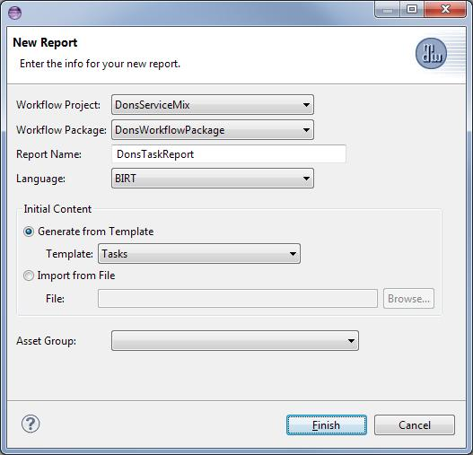
·
The wizard will
create a basic manual tasks report.
You'll notice that there are a couple of new views available in the
Designer perspective: the Data Explorer and Palette views:
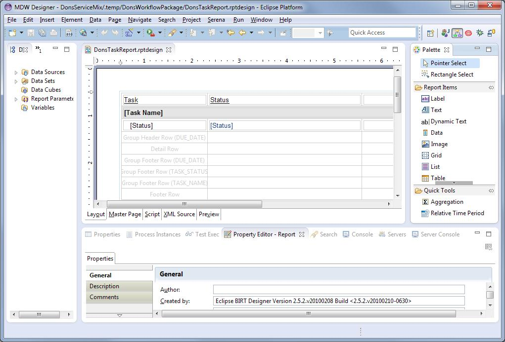
You'll use
these views in building your report design.
Comprehensive documentation is available under help topic BIRT Report
Developer Guide. However, we'll walk
through a few of the basic steps.
Confirm the
Data Source and Data Set for your Report:
·
The report
creation wizard set up an initial Data Source based on the database connection
parameters for your workflow project. To
view these parameters, expand the Data Sources element in Data Explorer view
and double-click on the MDWDataSource.
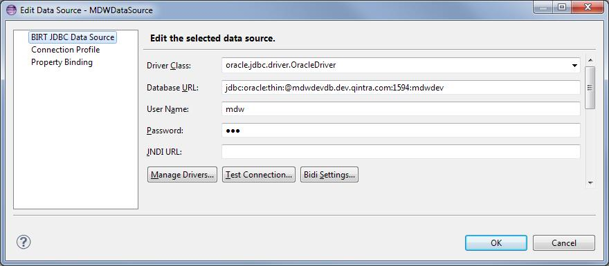
·
Because you
chose the Tasks template, the wizard also created an initial task-centric
dataset. Expand the Data Sets element
and double-click on the MDWDataSet.
You'll see the SQL query which selects the raw task data. In the Data Set dialog, select Preview
Results node for a quick glimpse at the actual result set that will be used to
generate the report.
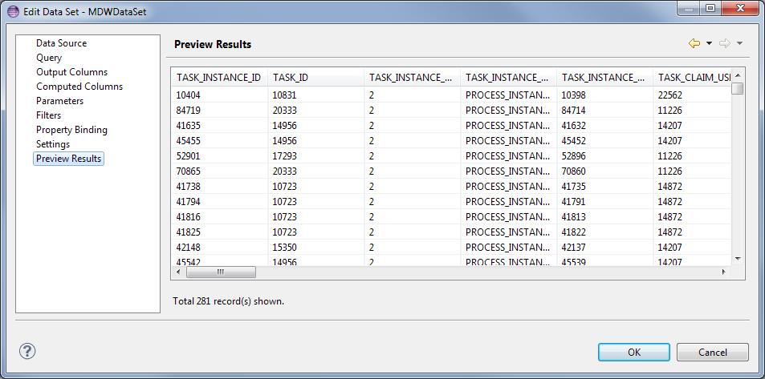
Preview the
Unmodified Report:
·
In the lower
portion of the main Report Design editor, there are a number of tabs to enable
editing of different aspects of the report.
Click on the Preview tab to see what the out-of-the-box report looks
like. This prebuilt report includes a
single user-entered parameter, Start Date.
The first time you preview the report you'll be prompted to enter a
value, and you can just leave the default.
This report demonstrates some aggregation techniques, so you'll notice
that each type of manual task is summarized according to how many instances
exist for each status.
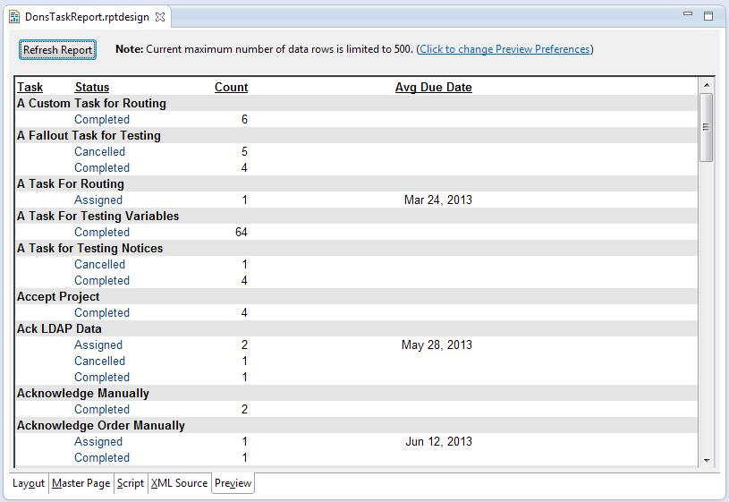
If you scan
the report output you should be able to locate instances of the manual tasks
you created in Step 1 of this section. Note that only tasks which have been assigned
appear in this report.
View the
Report through the Web:
·
End users
generally access reports via the web. To
enable this capability you'll need to install the optional mdw-reports feature
from the karaf command line:
features:install mdw-reports
·
Once this
feature is installed you can view your report in your browser by right-clicking
on it in Process Explorer and selecting Run.
User-entered parameters are captured in the Filters panel, and the
most-recently entered values are remembered as browser cookies. Values for filters can also be passed as URL
parameters. This enables custom webapps
to embed links which drill directly into a report with pre-specified values
depending on the context.
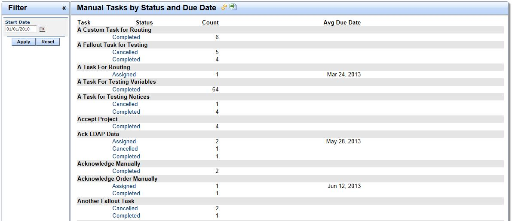
Modify the
Report to Show Oldest Due Date:
·
In Designer
perspective, click on the layout tab at the bottom of the Report Design
editor. Double-click on the column heading
labeled "Avg Due Date". Change
the label to read "Oldest Due Date".
·
Find the
aggregation cell called "Due Date Agg" and double-click it to open
the Aggregation Builder dialog. Select
"MIN" in the Function dropdown.
Select the Preview tab in the editor, which
will prompt you to save the report workflow asset. The preview should reflect your changes. Changes are picked up by the web viewer
dynamically, without needing to redeploy or refresh. You can also verify your changes in your
browser by right-clicking on the report and selecting Run.